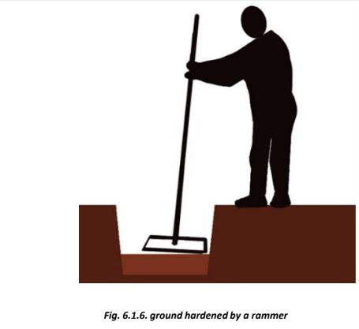

Excavation and Construction of Foundation
Excavation Process:


1. Mark the foundation trench width by placing pegs at both sides of the centerline, marked during layout, equal to the foundation width required.
2. Determine safe vertical sides of the trench wall, by examining the soil quality.
3. Remove the soil’s top surface and remove waste, organic materials, and other trash.
4. Ensure the flatness of the pit surface using a water tube level or with a scale and spirit level.
Load Bearing Structure

• Lay about 12 cm thick 1:5:10 cement concrete in the foundation trench and compact well to obtain a level surface.
• Provide 1 no 12mm dia vertical steel bar at every corner from the bottom of the foundation masonry.
• Construct foundation using bricks/blocks/coursed rubble masonry in cement mortar nearly up to the plinth level.
• Fill the space around the foundation masonry with 100 mm thick layers of soil.
• If the soil is dry, moisten it by spraying water.
• Each layer should be compacted using a ground tamper to prevent damage to the foundation.
• Add layers sequentially on both sides of the foundation until the required height is reached, which is generally slightly above the surrounding ground level.
• Extra excavated soil can be used to fill the plinth.
Step 2: Construction of Foundation
• The foundation should be at least 600 mm deep and 750 mm wide for a two-storey house. If the soil is loose or water stagnates for more than 2 days, consult with a Junior Engineer (JE) for a deeper foundation.
• This sketch shows stone masonry in the foundation.
• Dig the foundation trenches and compact the base with a rammer.
• Lay a 150mm thick base concrete (1:5:10) and ram it well to get a level surface.
• Provide one 12mm diameter vertical TMT bar at every corner and T-junction of walls passing through the base concrete and masonry, encased in 1:1.5:3 cement concrete as shown in the figure.
• If a large rock or boulder is found in the soil, do not remove it. Rough cut the top and sides to get a stepped shape and construct the foundation masonry around the rock using cement mortar.
• Provide one 12mm diameter vertical steel bar at every corner and wall junction, and encase the steel bar with cement concrete (1:1.5:3). If concrete blocks are available, use them in cement mortar (1:5) for the foundation.
• Provide 'through stones' in coursed rubble masonry at every 1200mm length of wall. Through stones are large stones that span the width of the wall.
• Continue masonry up to the plinth level, at least 30 cm above the ground level.

Step 3: Providing Vertical Steel Reinforcement at Corners
• Ensure that vertical steel bars are provided at every corner and extend at least 1200 mm above the plinth.
• Continue masonry work for the foundation and plinth.
• Provide through stones at about 1200 mm intervals in every alternate course.
• If long stones are not available, leave a gap of about 15 cm (6") in masonry, half fill the gap with 1:1.5:3 cement concrete, place a 10 mm diameter steel bar, and fill with concrete. This creates a good through stone in the masonry.
• Continue masonry up to 75mm below the plinth level, then provide a 75mm thick RCC plinth band to tie all the walls at the plinth level.